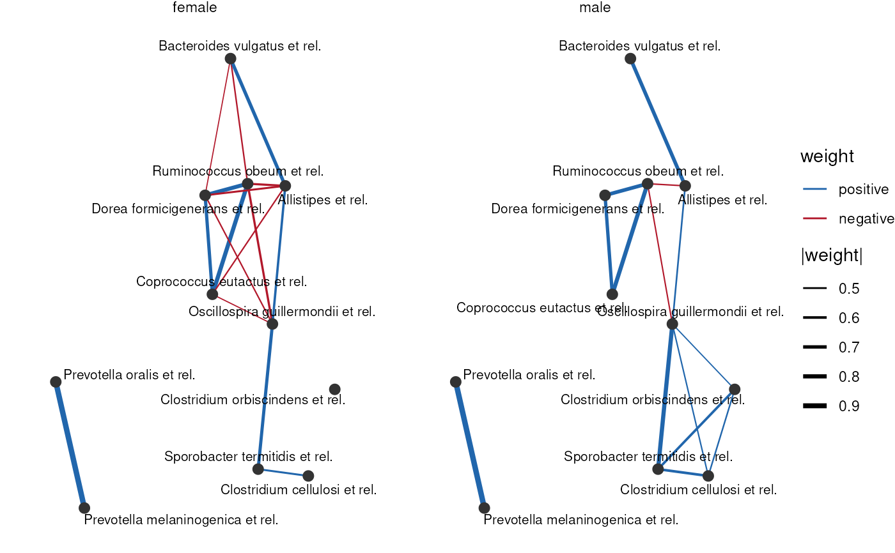
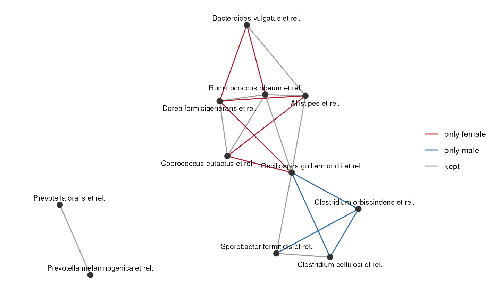
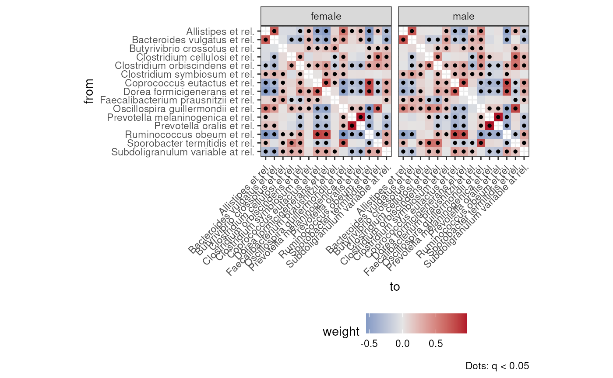

Plot a network of features or samples
Source:R/AllGenerics.R, R/plotNetwork.R, R/zzz-mae.R
plotNetwork.RdplotNetwork() draws a node-edge graph from pairs stored in
x: feature pairs (rowPair), sample pairs (colPair)
or an edge table in metadata(x), such as transitions between
states or associations estimated in time windows.
Usage
plotNetwork(x, ...)
# S4 method for class 'SummarizedExperiment'
plotNetwork(
x,
edges,
split.by = NULL,
diff = FALSE,
directed = FALSE,
layout = c("graph", "matrix"),
p.col = NULL,
threshold = 0.05,
...
)
# S4 method for class 'MultiAssayExperiment'
plotNetwork(x, ..., experiment = 1L)Arguments
- x
a
SummarizedExperimentobject; forrowPairandcolPairaSingleCellExperiment.- ...
additional arguments passed to
geom_segment, orgeom_tilefor the matrix.- edges
Character scalar. Specifies the edges: the name of arowPairorcolPairofx, or of adata.frameinmetadata(x)with the columnsfromandto, optionallyweightand thesplit.bycolumn.- split.by
Character scalar. Specifies a column of the edge table that splits the edges into panels, for example time windows, drawn with the same node positions. (Default:NULL)- diff
Logical scalar. With asplit.byof two levels, draws one network that marks the edges only in the first level (lost), only in the second (gained) or in both (kept). (Default:FALSE)- directed
Logical scalar. Whether edges point fromfromtoto, such as transitions between states. Directed edges are drawn as arrows, anddifftells a-b from b-a; otherwise they are the same edge. (Default:FALSE)- layout
Character scalar. Draws nodes joined by edges ("graph") or a matrix of tiles,fromin rows andtoin columns ("matrix"). (Default:"graph")- p.col
Character scalar. Withlayout = "matrix", a numeric column of the edge table holding p-values or adjusted p-values; tiles belowthresholdare marked with a dot. (Default:NULL)- threshold
Numeric scalar. Significance level forp.col. (Default:0.05)- experiment
Character scalarorinteger scalar. For aMultiAssayExperiment, the experiment to plot; its samples get thecolDataofx. (Default:1L)
Details
Requires igraph for the layout (Kamada-Kawai, which gives the same
positions on every run). Edges are coloured by the sign of
weight and their width follows its absolute value. Self-loops
(from equal to to), such as staying in a state, are drawn
as rings around their node. With diff, an edge whose weight
changes sign is kept. Node names are drawn for up to 40 nodes.
The matrix shows interaction strengths, such as those of a generalised
Lotka-Volterra model (Bucci et al. 2016, Fig. 4a,
doi:10.1186/s13059-016-0980-6
). Tiles are filled by weight,
blue below zero and red above, or by the change with diff.
Self-loops fill the diagonal; pairs without an edge stay blank. Nodes are
sorted by name in rows and columns, so a node keeps its place in every
panel. Undirected edges fill both a-b and b-a, so the matrix is
symmetric. The matrix does not need igraph.
Examples
# Correlations above 0.4 between 15 genera, in women and men
data("hitchip1006", package = "miaTime")
tse <- hitchip1006[, hitchip1006$time == 0 & !is.na(hitchip1006$sex)]
tse <- mia::transformAssay(tse, method = "clr", pseudocount = 1)
top <- names(sort(rowMeans(SummarizedExperiment::assay(tse, "counts")),
decreasing = TRUE))[1:15]
edges <- do.call(rbind, lapply(c("female", "male"), function(s) {
r <- cor(t(SummarizedExperiment::assay(tse, "clr")[top,
tse$sex == s]))
i <- which(abs(r) > 0.4 & upper.tri(r), arr.ind = TRUE)
data.frame(from = top[i[, 1]], to = top[i[, 2]], weight = r[i],
sex = s)
}))
S4Vectors::metadata(tse)$correlations <- edges
plotNetwork(tse, edges = "correlations", split.by = "sex")

# Edges gained and lost from women to men
plotNetwork(tse, edges = "correlations", split.by = "sex", diff = TRUE)

# All correlations as a matrix, with FDR q-values below 0.05 marked
pairs <- t(combn(top, 2))
edges <- do.call(rbind, lapply(c("female", "male"), function(s) {
m <- SummarizedExperiment::assay(tse, "clr")[, tse$sex == s]
test <- apply(pairs, 1, function(p) cor.test(m[p[1], ], m[p[2], ]))
data.frame(from = pairs[, 1], to = pairs[, 2], sex = s,
weight = vapply(test, `[[`, numeric(1), "estimate"),
p = vapply(test, `[[`, numeric(1), "p.value"))
}))
edges$q <- p.adjust(edges$p, method = "fdr")
S4Vectors::metadata(tse)$all <- edges
plotNetwork(tse, edges = "all", split.by = "sex", layout = "matrix",
p.col = "q")

# Moves between the dominant genera of consecutive samples
tse <- mia::addDominant(hitchip1006, name = "dominant")
cd <- as.data.frame(SummarizedExperiment::colData(tse))
cd <- cd[order(cd$subject, cd$time), ]
n <- nrow(cd)
same <- cd$subject[-1] == cd$subject[-n]
moves <- data.frame(from = cd$dominant[-n][same],
to = cd$dominant[-1][same], weight = 1)
moves <- aggregate(weight ~ from + to, data = moves, FUN = sum)
S4Vectors::metadata(tse)$moves <- moves
plotNetwork(tse, edges = "moves", directed = TRUE)